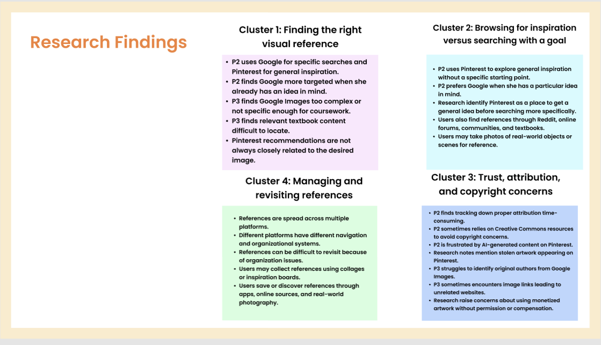

Gather is an AI-powered visual discovery concept that makes finding relevant images and creative inspiration easier. Instead of broad keyword searches, it uses personalized filters to refine results around a person's visual preferences and creative direction, so less time goes to sorting through results that don't fit.
Overview
Making Visual Search Focused, Not Broad
Finding the right reference image is still mostly keyword guesswork: you search, scroll past dozens of near-misses, and jump between Pinterest, Google, and other sites to find something specific. Gather explores how AI-driven personalization and smart filtering could make that experience more intuitive and tailored, surfacing images that match a user's actual visual direction rather than just the words they typed.
I worked on Gather with my partner Julia Hou through the Bits of Good design program over fall 2026. We grounded it in preliminary user research before designing anything, then carried it from a mid-fidelity flow through to the finished high-fidelity designs below.
01 · Research
Who It's For
We started from a user profile built from preliminary research. Maya is a creative university student who makes recreational art and runs a small business, so she needs inspiration and references she can trust and credit properly. Her frustrations shaped Gather directly: tailored results, clear sourcing, and an easier way to keep track of references.

01 · Research
What the Research Told Us
We synthesized the research into four clusters. Together they frame the whole problem: people switch tools depending on whether they're exploring or searching with a goal, references end up scattered and hard to revisit, and trust, attribution, and copyright are a recurring worry.
Finding the right reference
Google works when users already know what they want; Pinterest for open inspiration, but recommendations often miss the mark.
Browsing vs. searching with a goal
People explore without a starting point, then switch to targeted search once they have an idea, across Pinterest, Google, Reddit, and more.
Trust, attribution & copyright
Tracking down proper attribution is time-consuming; users worry about stolen or AI-generated work and identifying original creators.
Managing & revisiting references
References are spread across platforms with different systems, making them hard to save and come back to.

02 · Mid-Fidelity
Mid-Fidelity Designs
The mid-fidelity screens were the first wireframes, early layout explorations meant to test whether prompt-driven visual search felt better than keyword guesswork before investing in a polished interface. They proved the core idea, but deliberately left a lot out. Navigation was basic, search was a single box with no clear modes, filtering relied on a plain wall of dropdowns, and the discovery features, attribution, saved artists, and collections, were still placeholders. This section is the starting point; the high-fidelity designs that follow are where those gaps get resolved.

Search & Filtering
A single search box with an early take on filtering. It was enough to validate the concept, but gave no sense of place, no persistent navigation, and no distinction between the different ways someone might want to search.

Filter Choices
Refining a search meant working through a fixed set of dropdowns shown all at once. It followed the standard pattern but asked the user to know which controls mattered before they had seen a single result.

Result Detail
Selecting a result opened a placeholder detail panel. The layout was in place, but the sourcing information, the part that actually builds trust, was still empty.
03 · High-Fidelity
High-Fidelity Designs
The high-fidelity pass turned those early wireframes into a product someone would actually reach for, with real content, real sourcing, and a layout that explains itself. The improvements concentrate where the research pointed: expanded navigation with Explore, Artists, and Collections; AI-powered search and prompt-based filters that read intent instead of making people guess at controls; search results with match percentages and short relevance explanations; image details with real creators, licenses, and citations; and improved saving and collection management so references stay organized. The screens below walk through that finished experience in the order a real session tends to follow.

Search
Two ways to look, offered side by side so the tool adapts to the user instead of the other way around. AI Search takes a plain-language prompt and reads the intent behind it, which suits the moments when you can describe a feeling but not the exact keyword. General Search keeps the familiar keyword flow for when you already know precisely what you want. The persistent left sidebar carries recent searches and saved collections across the whole app, so you never lose your place, and navigation to Explore, Artists, and Collections stays one click away. The result is a starting screen that makes the product's range obvious the moment you land on it, rather than a single box that hides everything it can do.

Prompt-Based Filters
Instead of a wall of dropdowns, refining a search starts with a plain-language prompt like "bright sunny day." The AI interprets it and surfaces only the controls that fit, such as lighting, mood, and color, while still leaving manual controls for anyone who wants to fine-tune. It removes the upfront guesswork of knowing which filters matter before seeing any results.

Results & Attribution
Every result carries a match percentage and a short reason it surfaced, so the ranking is never a black box. Opening an image reveals the real creator, source, license, and a ready-to-use citation, turning the research team's biggest pain, trustworthy attribution, into a built-in part of each result rather than an afterthought.

Artist Discovery
Find creators by style, see their work gathered in one view, and save the ones worth following. It shifts Gather from a one-off image search toward an ongoing relationship with the artists behind the references you keep coming back to.

Explore
A For You and New feed for open-ended browsing, built for the moments when you have no fixed idea yet and just want to wander into inspiration before committing to a search. It gives the "browsing without a goal" behavior from the research a home of its own.

Collections
Save, name, delete, and pin boards so references stay organized instead of scattered across tabs and apps. It answers the research finding that people lose track of inspiration as fast as they find it, and closes the loop from first search to a reference you can reliably return to.
Where it landed. Gather went from a research-backed idea to a finished high-fidelity design: a user profile and four insight clusters that each map to a real screen. The clearest thread is attribution, the research surfaced it as a genuine pain, and the final design makes a creator, source, and license part of every image rather than an afterthought.